DramaR² Rebuttal Demos
Method comparisons · RSI across rounds · Complete workflow
1. Method comparison
Three Sunsets
2. RSI across rounds
A Call from Tomorrow · Original project-page demos
Stella receives information through a phone connected to the future. Follow how her knowledge, choices, and relationships carry from the first episode into the second.
Round 12 · DramaR²
Round labels follow the paper. Each player can be controlled separately to compare corresponding story events.
3. Complete production and RSI workflow
The First Drop · Rainseed Protocol, Episode 1
Follow the original project-page demo from its story and shot plan through reference assets, rendering, review, and editing. The outer-loop walkthrough then shows how production evidence can guide a reusable harness update.
Two connected loops
Story & planningAssets & directionRender & reviewEditing & drama
Local repair returns a failed segment to direction and rendering.
Production tracesFailure attributionHarness updateAutomatic tests & promotion
↶ Accepted updates guide later productions; new traces support the next round.
01
Story input: one raindrop to save the city
Arclight’s climate dome is failing. Maintenance courier Nia Vale carries a Rainseed capsule toward the climate core, accompanied by her repair drone, Ori. A blocked route, security drones, and Captain Sol stand in her way. To revive the seed, she must persuade Sol to open the dome and let a natural raindrop through.
02
Story plan: seven connected beats
The planner divides the story into seven segments: six planned at 25 seconds and a 20-second ending. Each segment specifies what has happened, the next action, and the state passed to the following segment.
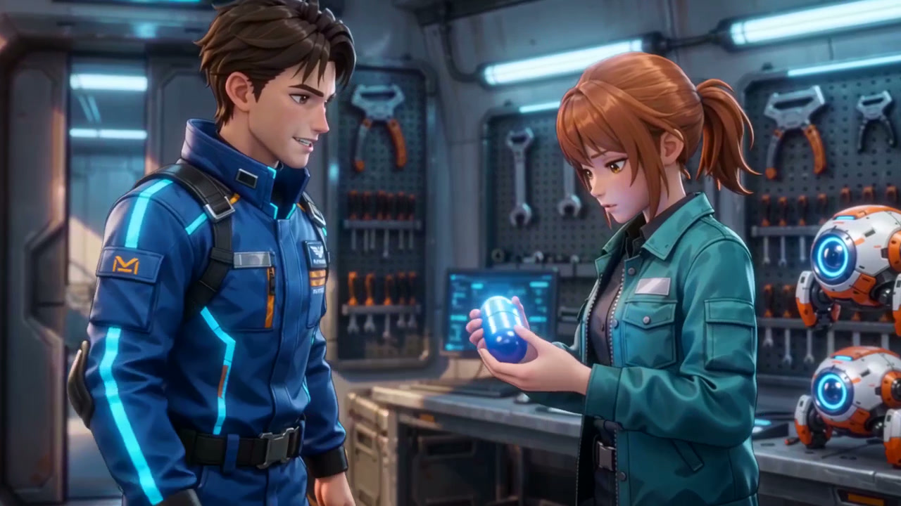
Setup1. Dome deadline
A cooling failure gives Nia eighteen minutes to deliver the Rainseed.
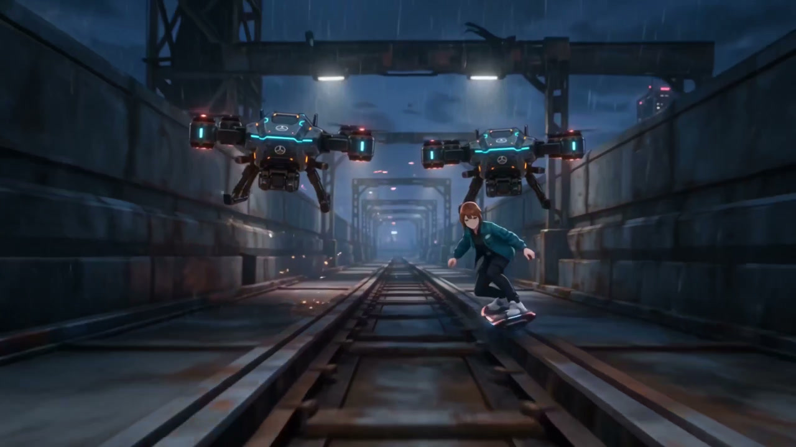
Conflict2. Route sealed
A blocked route sends Nia onto an abandoned rail and into a drone attack.
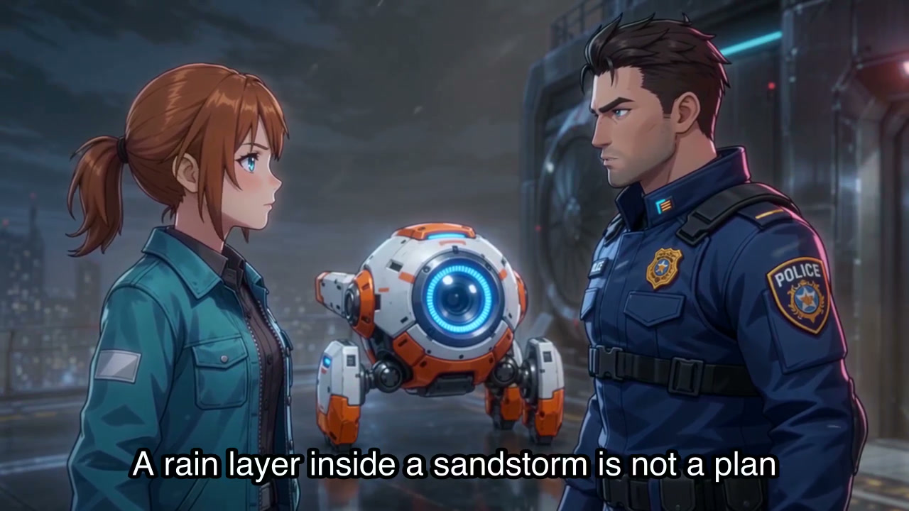
Rising action3. Rain revealed
Ori finds natural rain above the storm. Sol refuses to open the dome.
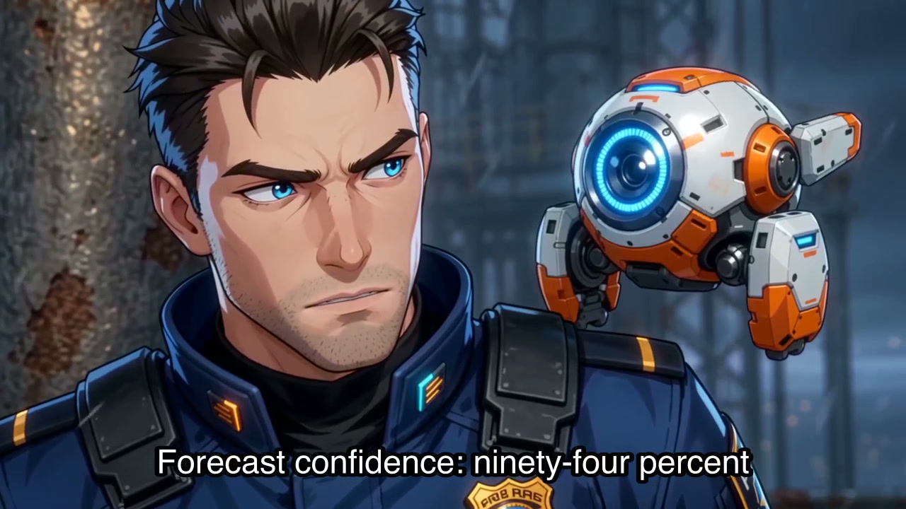
Turn4. Latch released
Nia protects Sol from the drones. He releases the manual latch.
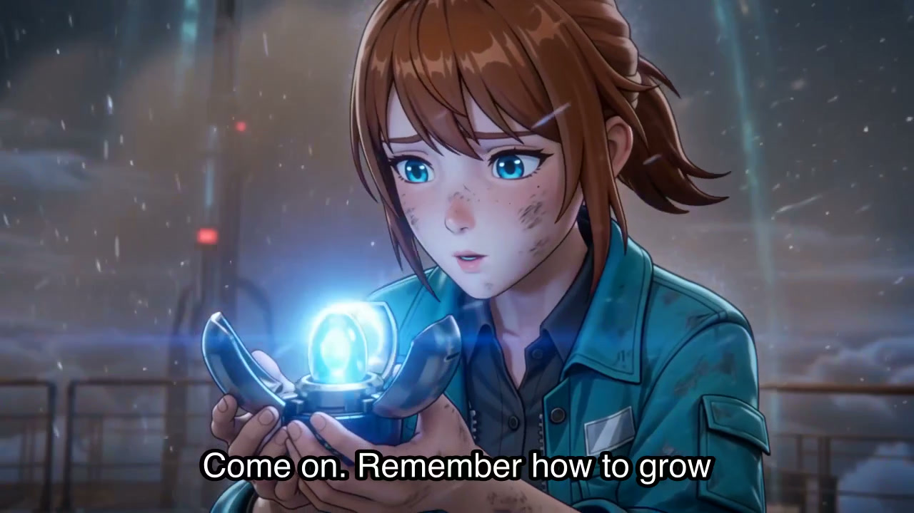
Climax5. First drop
A natural raindrop activates the Rainseed and restarts the cooling core.
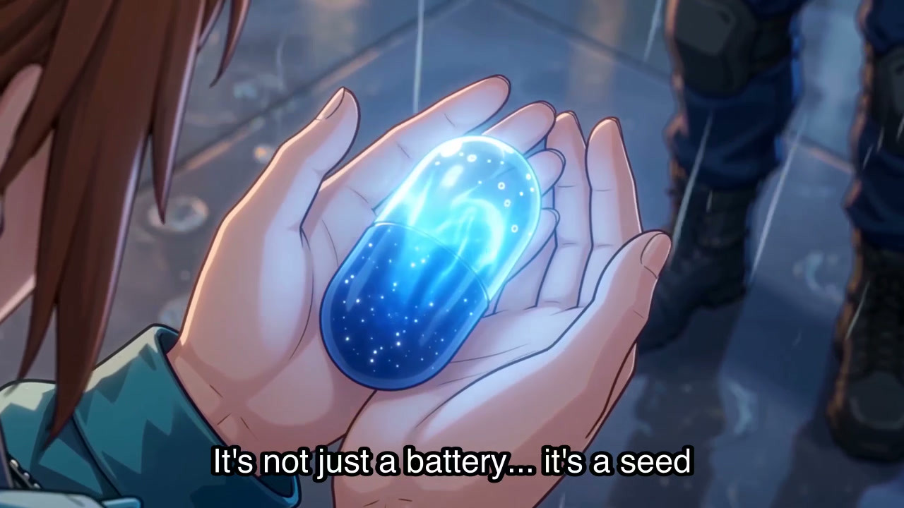
Payoff6. City breathes
Rain returns. Sol takes responsibility, and the city begins to recover.
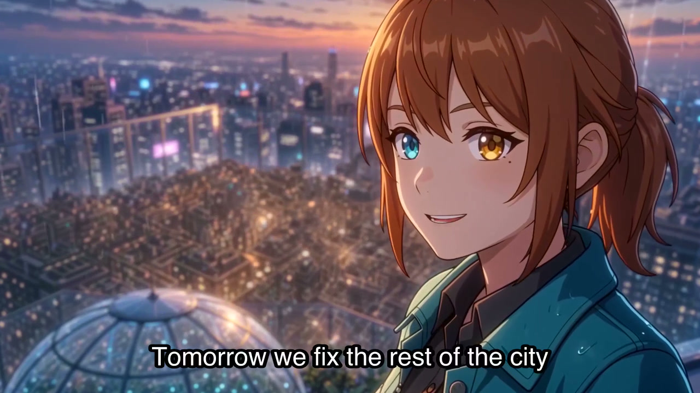
Coda7. Tomorrow begins
A blue sprout appears. Nia sets out to repair the rest of the city.
03
Assets and spatial references
The rooftop-garden segment uses the five visual asset sheets and the opening layout shown below, together with character voice references. Character and prop sheets define appearance. The spatial sketch sets the starting positions and facing directions while leaving later movement to the shot plan.
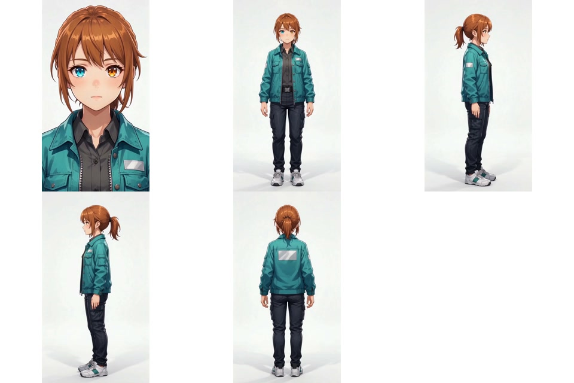
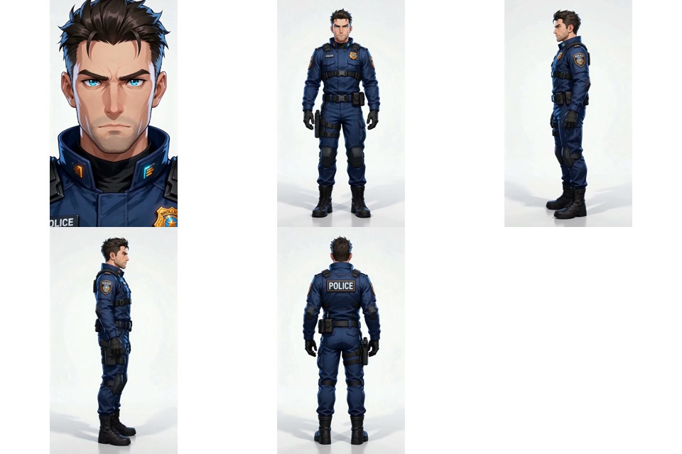
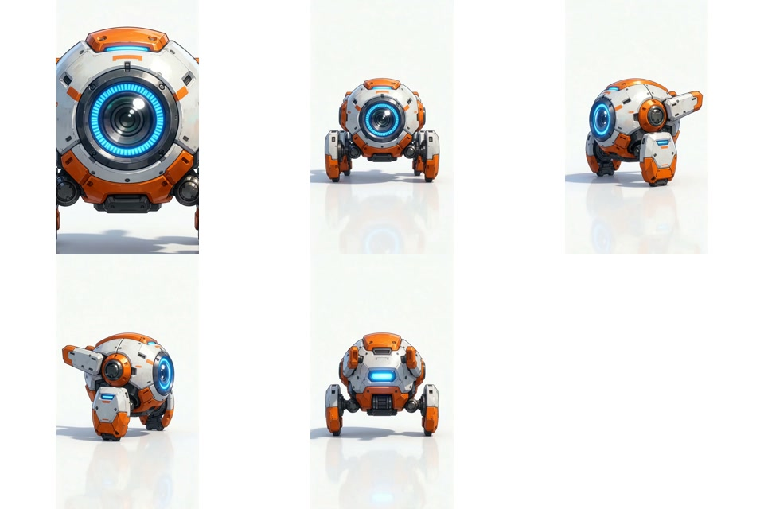
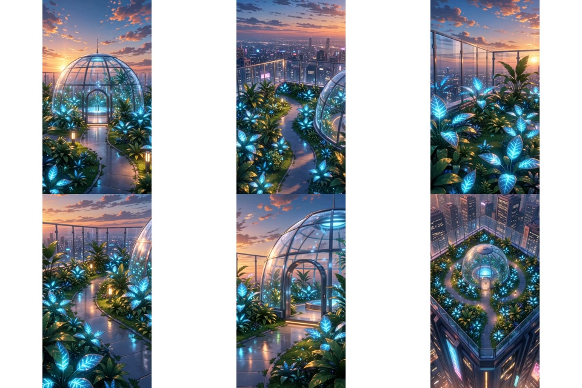
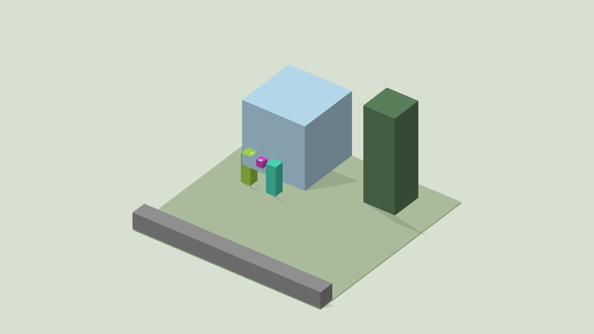
04
Direction: make the change visible
Segment 6 turns the city’s recovery into a change in the characters’ relationship. The revised six-shot plan makes Sol’s handoff visible, keeps the silver beacon distinct from the blue Rainseed, and connects dialogue to specific actions.
- 0.0–6.0 s
Medium shot. Sol detaches his silver restraint beacon and extends it toward Nia. “The report will say the manual override was my decision.”
- 6.0–11.5 s
Shot–reverse shot. Nia receives the beacon with her right hand. She says, “That sounds like a security problem.” Sol replies, “It is a security solution.”
- 11.5–16.0 s
Ori hovers between them and announces that climate recovery is at twenty-two percent and rising.
- 16.0–18.0 s
Close-up of the activated Rainseed. Nia realizes that it is a living seed.
- 18.0–22.5 s
Nia says, “It was never a battery.” Sol answers, “No. It was a beginning.”
- 22.5–25.0 s
A wide crane-up shot reveals the renewed garden and the city lighting up below.
05
Render, review, and local repair
The first review flags the missing handoff and confusion between the restraint beacon and the Rainseed. The revised direction specifies the giver, the receiving hand, and the separate identity of each prop. The affected segment is rendered again.
Initial render
After focused repair
The second review reports no hard failures. The revised segment is used in the completed episode below.
06
Editing: connect the segments and add subtitles
The editor assembles the seven segments, chooses the cuts between them, and uses a one-second crossfade into the recovery scene. The final edition includes 31 subtitle cues timed from the audio.
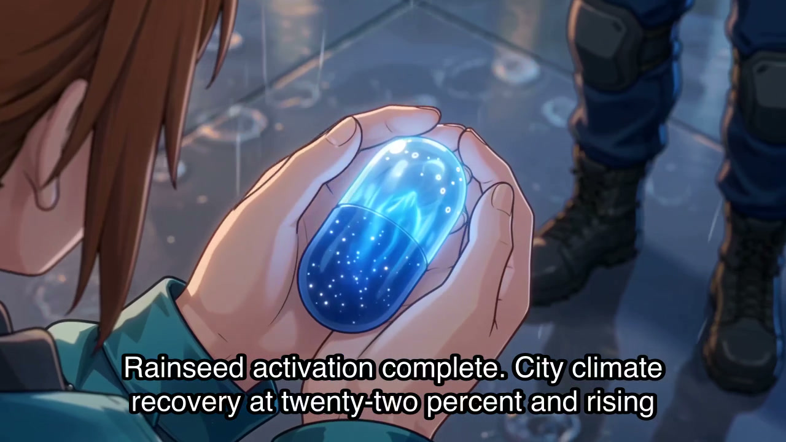
07
The complete episode
The First Drop · 2 minutes 49 seconds · 1280 × 720 · Audio and English subtitles
08
Outer RSI loop: turn an observed failure into a reusable rule
The handoff review above illustrates the evidence that can motivate a harness update. The workflow below shows how RSI tests whether a rule should be reused in later productions.
- 1 · Failure evidence
Keep the plan, render, and review together
The plan requires Sol to hand Nia a silver beacon. The first review identifies a missing transfer and confusion with the blue Rainseed.
- 2 · Attribution
Check for a reusable planning gap
Check whether the harness consistently requires visible transfer actions and separate identities for props carried by the same character.
- 3 · Candidate harness update
Make object transfers explicit
Example rule: specify the giver, object, receiver, and visible transfer action. Preserve each prop’s identity and resulting ownership across shots.
- 4 · Replay and paired tests
Test the rule beyond one repair
Replay the original failure with the candidate harness, then compare the current and candidate harnesses on the outer-loop test set.
- 5 · Automatic promotion and reuse
Carry a tested rule into later production
Promote the candidate only if it resolves the target failure and meets the quality and no-regression criteria. Later production traces supply evidence for the next round.
↶ Updated harness → new production → new evidence → the next RSI round.
4. Consistency across random seeds
We reuse an actual Wan production request for a field-work scene from Two Months in the Country. The prompt, six image references, two voice references, and generation settings remain fixed; only the seed changes.
Wan 3.0 · 1280 × 720 · 25 seconds · Audio on · Original prompt-expansion setting retained
Sample 1
Sample 2
Sample 3
Across these three seeds, the same characters, core dialogue, event order, and ending are preserved. Camera framing and action timing vary, while Chloe consistently chooses to keep working after the insect scare.
Shared image references
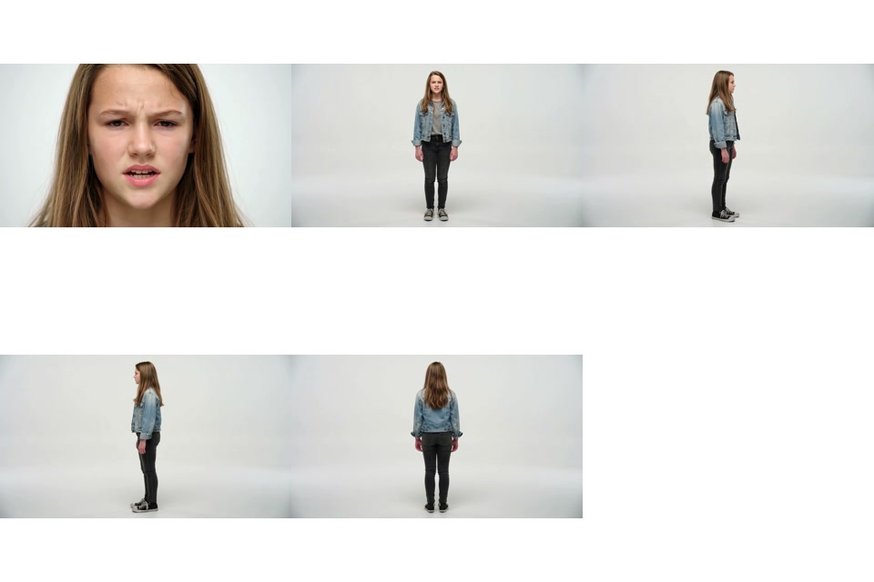
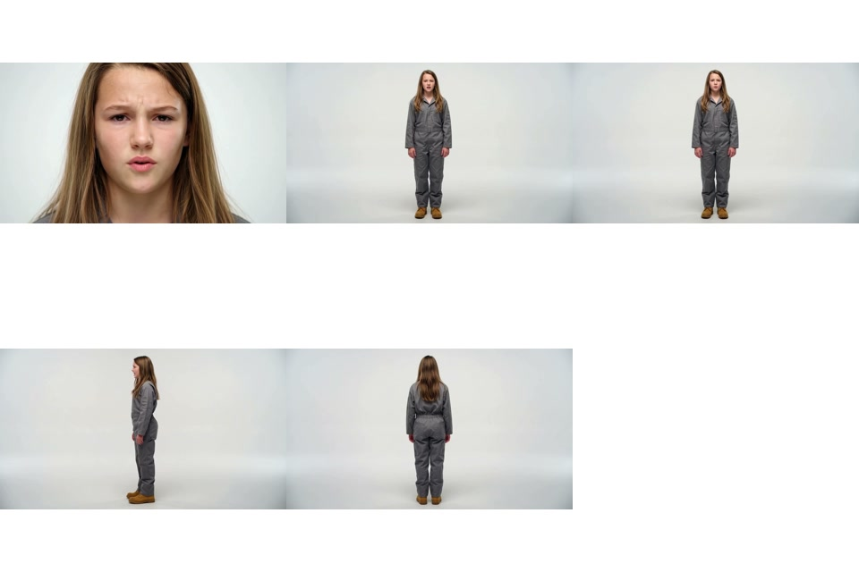
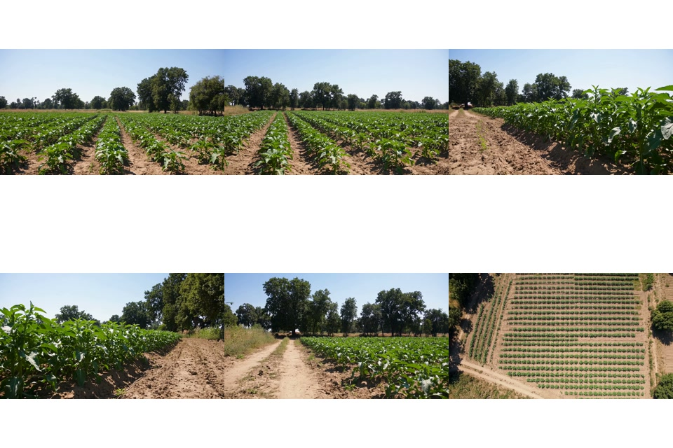
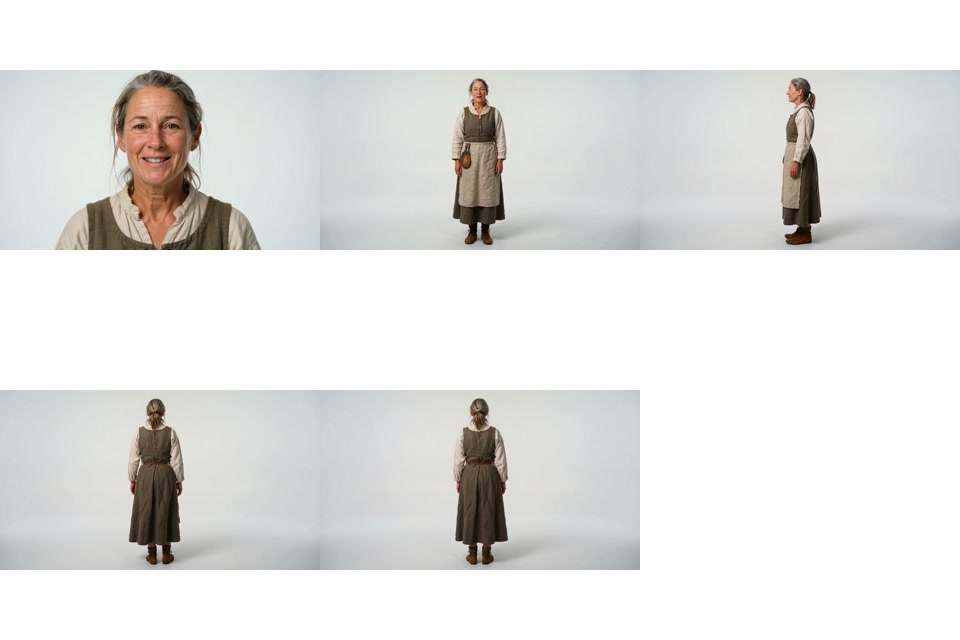
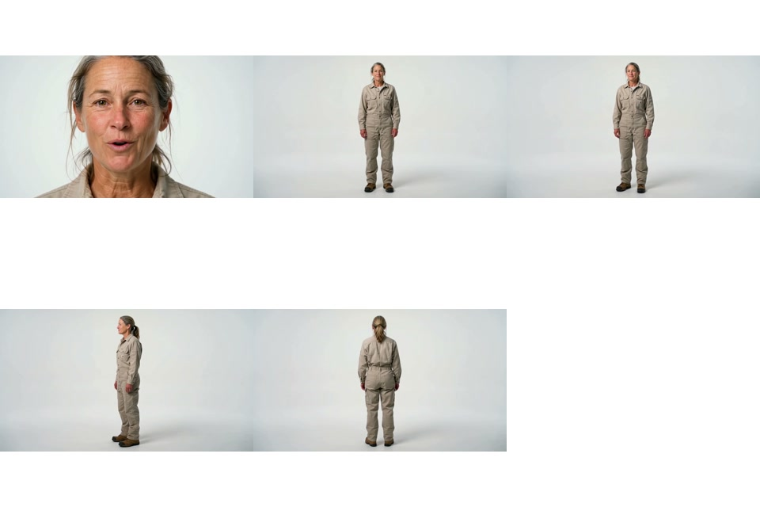
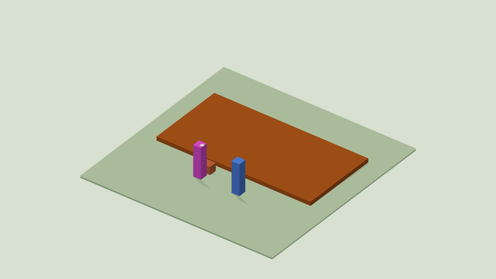
Shared voice references
Laura: voice reference
Chloe: voice reference